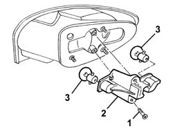

5540A50 tail-light bulb (one), lh or rh - replace
- Path
- Procedures > 55 ELECTRICAL EQUIPMENT > 5540 EXTERIOR LIGHTING > 5540A lighting > 5540A50 tail-light bulb (one), lh or rh - replace
- Kind
- repair procedure (removal / refitting; the operation number is the code)
- Applies to
- all engines; all production periods
- Interactive page
- https://sloeber94.github.io/elrnDB-a147/en/#/3025546
Applies to: all engines; all production periods
 Removing
Removing
 Refitting
Refitting5580T30 Bose sound system' SUBWOOFER - R.R. (left side only)
1. Unscrew the bolt.
2. Remove the bulb holder and bulbs.
3. Remove the relevant bulb (bayonet mount).

Applies to: all engines; all production periods
Refitting
RemovingCheck the operation of the bulb.
Refit the bulb in the bulb holder.
Refit the bulb holder and secure it using the bolt
Check the operation of the rear light cluster lights.
5580T30 Bose sound system' SUBWOOFER - R.R. (left side only)
Topics linked from this page (2)
- 5540A56 dipped/main beam electrical wiring - check component operation, line continuity and repair contacts - includes relay replacement if necessary
- 5580T30 Bose sound system' SUBWOOFER - R.R.